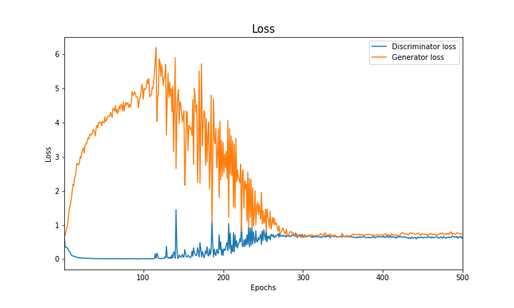
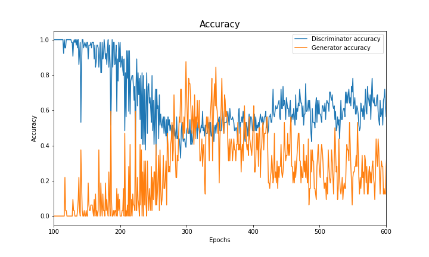

MNIST Generative Adversarial Networks

Artificial intelligence (AI) is the simulation of human intelligence processes by machines. AI is divided into three stages: Artificial Narrow Intelligence (ANI), Artificial General Intelligence (AGI), and Artificial Super Intelligence (ASI). ANI involves machine learning and specializes in one area, AGI refers to a machine's ability to understand or learn any intellectual task like a human, and ASI entails having intellectual powers beyond any humans. Currently, superintelligence is hypothetical and the technology does not exist. In this analysis, we will break down the components of the Generative Adversarial Networks (GANs) and generate images using the MNIST dataset. The purpose is to introduce the idea of using deep neural networks for artificial intelligence.
Resources
- Software: Python 3.10, Jupyter Lab 3.4.4
- Data Source: Keras MNIST
Artificial Neural Networks
Neural networks (also known as artificial neural networks, or ANN) are a set of algorithms that are modeled after the human brain and are categorized as Artificial General Intelligence. Neural networks are an advanced form of machine learning that recognizes patterns and features in input data and provides a clear quantitative output. In its simplest form, a neural network contains layers of neurons, which perform individual computations. These computations are connected and weighed against one another until the neurons reach the final layer, which returns a numerical result, or an encoded categorical result.
One way to use a neural network model is to create a classification algorithm that determines if an input belongs in one category versus another. Alternatively, neural network models can behave like a regression model, where a dependent output variable can be predicted from independent input variables. Therefore, neural network models can be an alternative to many of the models we have learned throughout the course, such as random forest, logistic regression, or multiple linear regression.
There are a few advantages to using a neural network instead of a traditional statistical or machine learning model. For instance, neural networks are effective at detecting complex, nonlinear relationships and can approximate any function based on the Universal Approximation Theorem. Additionally, neural networks have a greater tolerance for messy data and can learn to ignore noisy characteristics in data. The two biggest disadvantages to using a neural network model are that the layers of neurons are often too complex to dissect and understand (creating a black box problem), and neural networks are prone to overfitting (characterizing the training data so well that it does not generalize to test data effectively). However, both disadvantages can be mitigated and accounted for.
Conceptually, neural networks involve multi-dimensional linear equations and dot products. To simplify the explanation, we will use the Rosenblatt perceptron model. The Rosenblatt perceptron model was introduced in 1957 as a binary single neural network unit, and it mimics a biological neuron by receiving input data, weighing the information, and producing a clear output.
The Rosenblatt perceptron model has four major components:
- Input values, typically labeled as $x$ or 𝝌 (chi, pronounced kaai, as in eye)
- A weight coefficient for each input value, typically labeled as $w$ or ⍵ (omega)
- Bias is a constant value added to the input to influence the final decision, typically labeled as $w_0$.
- A net summary function that aggregates all weighted inputs, in this case, a weighted summation:

The inputs values $(x_1, x_2, \cdots, x_n)$ are multiplied with the corresponding weights $(w_1, w_2, \cdots, w_n)$ to produce the output $y$. As illustrated in the larger circle, we sum the weighted inputs to obtain the total amount of input which includes the bias term $w_0$. The equation can be rewritten as:
$$ y = \sum_{i=1}^n w_ix_i + w_0 $$ $$ y = w_1x_1 + w_2x_2 + \cdots + w_ix_i + w_0 $$As we can see, the Rosenblatt perceptron model is just a multilinear regression model. This classic perceptron model was improved by Minsky and Papert in 1969 to create the foundation for modern neural networks. Minksy and Papert introduced the activation function. The activation function is a mathematical function applied to the end of each "neuron" (or each individual perceptron model) that transforms the output to a quantitative value. This quantitative output is used as an input value for other layers in the neural network model. There are a wide variety of activation functions that can be used for many specific purposes; however, most neural networks will use one of the following activation functions:
- The Linear function returns the sum of our weighted inputs without transformation.
- The Sigmoid function is identified by a characteristic S curve. It transforms the output to a range between 0 and 1.
- The TanH function is also identified by a characteristic S curve; however, it transforms the output to a range between -1 and 1.
- The Rectified Linear Unit (ReLU) function returns a value from 0 to infinity, so any negative input through the activation function is 0. It is the most used activation function in neural networks due to its simplifying output, but it might not be appropriate for simpler models.
- The Leaky ReLU function is a "leaky" alternative to the ReLU function, whereby negative input values will return very small negative values.
To illustrate this, we will apply the activation function $f$ to the original Rosenblatt perceptron model:
$$ y = f\left(\sum_{i=1}^n w_ix_i + w_0\right) $$Additionally, the weighted sum can be rewritten as a dot product and can be computed more efficiently. The dot product is an algebraic operation that takes the coordinates of two vectors and produces a single number. In terms of neural networks, the dot product explains the relationship between the input values and the weights. Let the vector $x = [x_1, x_2, \cdots, x_n]$ contain the inputs, and the vector $w = [w_1, w_2, \cdots, w_n]$ contain the corresponding weights. By the definition of the dot product:
$$ \sum_{i=1}^n w_ix_i = w \cdot x $$Therefore the updated perceptron model is:
$$ y = f\left(w \cdot x + w_0\right) $$From the perceptron models, we can see that a basic neural network has three layers:
- An input layer of input values transformed by weight coefficients
- A single "hidden" layer of neurons (single neuron or multiple neurons)
- An output layer that reports the classification or regression model value

By understanding this framework, we can dive deeper into combining multiple neural networks to train machines to generate images from scratch.
The MNIST Data
The MNIST (Modified National Institute of Standards and Technology) database consists of images of handwritten digits, together with labels indicating which digit is in each image. Since both the features and the labels are present in this dataset, the MNIST data is frequently used for training various image processing systems.
There are several versions of the MNIST dataset. We used the one that is built into Keras, described here.
- Classes: 10
- Training Set: 60,000
- Testing Set: 10,000
- Dimensionality: 784 (28 x 28)
- Pixel Values: 0 - 255
Python Code:
from keras.datasets import mnist
(X_train, Y_train), (X_test, Y_test) = mnist.load_data()

Generative Adversarial Networks (GANs)
Generative Adversarial Networks use deep learning methods to discover patterns in the input data to generate new instances of data. It is an unsupervised machine learning model that utilizes the zero-sum game. The zero-sum game is a mathematical representation in game theory of a situation that involves two sides. It is a competitive game where the advantage of one side is a disadvantage for the other. GANs are built from two neural network models: the generator model and the discriminator model.

The Generator
The generator creates images by learning the joint probability distribution of the input variable and the output variable:
$$ P(X,Y) = P(X|Y)\text{ }P(Y) = P(Y|X)\text{ }P(X) $$This model takes randomly sampled noise distribution data $(z)$ to produce a fake image $(G(z))$. Additionally, the domain of the training data must be the same as the range of $G(z)$ since we are trying to replicate the training data.
Python Code:
def generator_function():
model = Sequential()
# Generator first hidden layer
model.add(Dense(256, input_dim=latent_dim))
model.add(LeakyReLU(alpha=0.2))
model.add(BatchNormalization(momentum=0.8))
# Generator second hidden layer
model.add(Dense(512))
model.add(LeakyReLU(alpha=0.2))
model.add(BatchNormalization(momentum=0.8))
# Generator third hidden layer
model.add(Dense(1024))
model.add(LeakyReLU(alpha=0.2))
model.add(BatchNormalization(momentum=0.8))
# Generator output layer
model.add(Dense(np.prod(img_shape), activation='tanh'))
model.add(Reshape(img_shape))
model.summary()
noise = Input(shape=(latent_dim,))
img = model(noise)
return Model(noise, img)
# Build the generator
generator = generator_function()
# The generator takes noise as input and generates images
z = Input(shape=(latent_dim,))
img = generator(z)
As stated before, the generator is a neural network model that uses three hidden layers with the Leaky ReLU function. The output layer uses the TanH activation function.
• First Hidden Layer: 25856 params = [100 inputs (from input layer) * 256 neurons] + (256 bias terms)
• Second Hidden Layer: 131584 params = [256 inputs (from first hidden layer) * 512 neurons] + (512 bias terms)
• Third Hidden Layer: 525312 params = [80 inputs (from second hidden layer) * 1024 neurons] + (1024 bias terms)
• Output Layer: 803600 params = [1024 inputs (from third hidden layer) * 784 neuron] + (784 bias term)
_________________________________________________________________
Layer (type) Output Shape Param #
=================================================================
dense (Dense) (None, 256) 25856
batch_normalization 1024
dense_1 (Dense) (None, 512) 131584
batch_normalization 2048
dense_2 (Dense) (None, 1024) 525312
batch_normalization 4096
dense_3 (Dense) (None, 784) 803600
=================================================================
Total params: 1,493,520
Trainable params: 1,489,936
Non-trainable params: 3,584
_________________________________________________________________
The Discriminator
The discriminator attempts to classify these fake images $(G(z))$ as real or fake by learning the conditional probability of the target variable given the input variable:
$$ P(Y|X = x) $$In other words, this model learns from the training data and acts as a binary classifier to determine if the reconstructed data $(G(z))$ is from the training data. The discriminator attempts to maximize the chances of predicting the correct classes.
Python Code:
def discriminator_function():
model = Sequential()
model.add(Flatten(input_shape=img_shape))
# Discriminator first hidden layer
model.add(Dense(512))
model.add(LeakyReLU(alpha=0.2))
# Discriminator second hidden layer
model.add(Dense(256))
model.add(LeakyReLU(alpha=0.2))
# Discriminator output layer
model.add(Dense(1, activation='sigmoid'))
model.summary()
img = Input(shape=img_shape)
validity = model(img)
return Model(img, validity)
# Build the discriminator
discriminator = discriminator_function()
discriminator.compile(loss='binary_crossentropy', optimizer=optimizer, metrics=['accuracy'])
# The discriminator takes generated images as input and determines validity (binary classifier)
validity = discriminator(img)
As stated before, the discriminator is also a neural network model that uses two hidden layers with the Leaky ReLU function. Since we need the output to be a binary classifier, the output layer uses the Sigmoid activation function.
• First Hidden Layer: 401920 params = [784 inputs (from generator output layer) * 512 neurons] + (512 bias terms)
• Second Hidden Layer: 131328 params = [512 inputs (from first hidden layer) * 256 neurons] + (256 bias terms)
• Output Layer: 257 params = [256 inputs (from second hidden layer) * 1 neuron] + (1 bias term)
_________________________________________________________________
Layer (type) Output Shape Param #
=================================================================
dense_4 (Dense) (None, 512) 401920
dense_5 (Dense) (None, 256) 131328
dense_6 (Dense) (None, 1) 257
=================================================================
Total params: 533,505
Trainable params: 533,505
Non-trainable params: 0
_________________________________________________________________
Zero-Sum Game
The goal of the generator is to fool the discriminator, therefore minimizing the probability that the discriminator is correct. The goal of the discriminator is to maximize the probability of classifying the generated images as fake. Thus, a zero-sum game.
Python Code:
# Build the GAN
GAN = Model(z, validity)
# Train the generator to fool the discriminator
GAN.compile(loss='binary_crossentropy', optimizer=optimizer, metrics=['accuracy'])
The mathematical expression to determine the optimal results in the zero-sum game is called the value function $(V(G,D))$. In order to create $V(G,D)$ we must use the binary cross-entropy loss function. This function measures the performance of a classification model whose output is a probability value between 0 and 1.
$$ L = - \sum_{i=0}^n y\log\hat{y} + (1-y)\log(1-\hat{y}) $$Training Data:
Let $y = 1$ and $\hat{y} = D(x)$ $\implies L = \log (D(x)$
Reconstructed Data:
Let $y = 0$ and $\hat{y} = D(G(z))$ $\implies L = \log (1 - D(G(z))$
By applying the expectation and combining the previous binary cross-entropy loss functions, we get:
$$ \displaystyle{\min_{G}}\text{ }\displaystyle{\max_{D}}\text{ }V(G,D) = $$ $$ E\bigl(\log (D(x)\bigl) + E\Bigl(\log \bigl(1 - D(G(z)\bigl)\Bigl) $$To optimize the loss function for the neural network, we will be applying stochastic processes. By holding the learning of the generator $(G)$ fixed and letting $m$ be the data samples + the fake data samples, we can update the parameters of our discriminator $\theta_d$ using the stochastic gradient descent and partial derivative:
$$ \frac{\partial}{\partial \theta_d} \frac{1}{m} \Bigl(log\bigl(D(x)\bigl) + log\bigl(1-D(G(z))\bigl)\Bigl) $$Now by holding the learning of the discriminator $(D)$ fixed and letting $m$ be the fake data samples, we can update the parameters of our generator $\theta_g$ using the stochastic gradient descent and partial derivative:
$$ \frac{\partial}{\partial \theta_g} \frac{1}{m} \Bigl(log\bigl(1-D(G(z))\bigl)\Bigl) $$Since both the generator and the discriminator are trying to optimize, eventually the results will converge. In other words, it would be impossible for the discriminator to tell the difference between the trained data and the reconstructed data created from the generator. Generative Adversarial Networks are extremely complex and training them to achieve perfection would be difficult.
Results
We can see that the Generative Adversarial Network was able to generate MNIST handwritten digits from scratch. This process is illustrated in the GIF below:

The model performance was reported on every batch. This includes the loss and accuracy of the discriminative and generative models. We were able to train 30,000 epochs with a batch size of 32. The generated results were saved every 200 sample intervals. The figures below visualize the changes in loss and accuracy in the GANs model:
 Both the loss and the accuracy of the GANs model converge to a certain point. If we run the algorithm infinitely times, the discriminator loss converges to approximately 0.57 and the generator loss converges to approximately 1. Furthermore, as the number of epochs goes to infinity, the discriminator accuracy converges to an interval between 65% - 75%, and the generator accuracy converges to an interval between 0% - 30%.
Finally, the figures below show the breakdown of the generated images from 0 epochs to 30,000 epochs.


Sources:
- University of Utah, Lecture on Neural Networks
- https://github.com/eriklindernoren
- https://news.mit.edu
- https://towardsdatascience.com
- https://www.tensorflow.org
- https://maelfabien.github.io